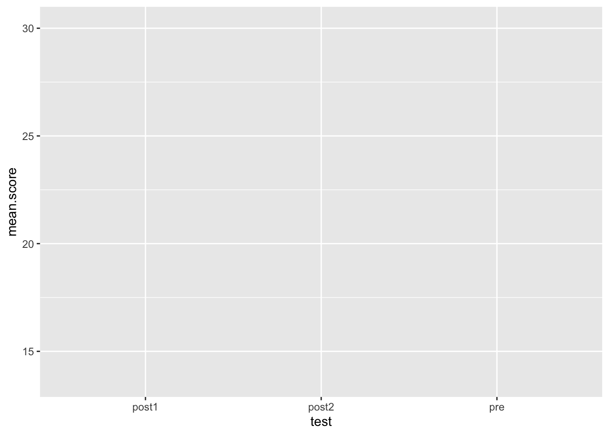
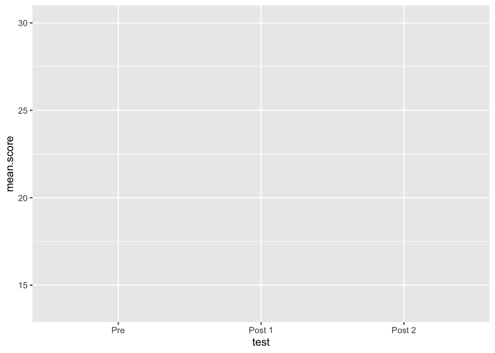
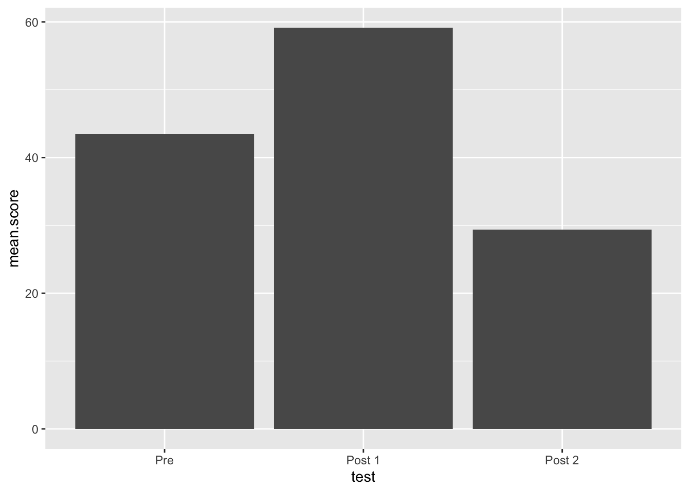
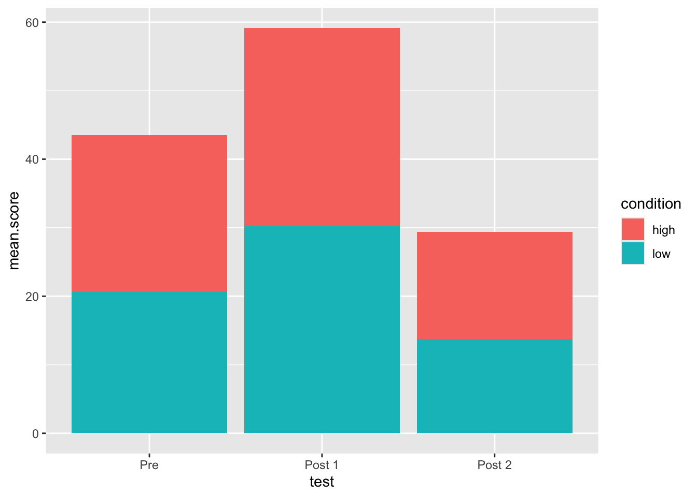
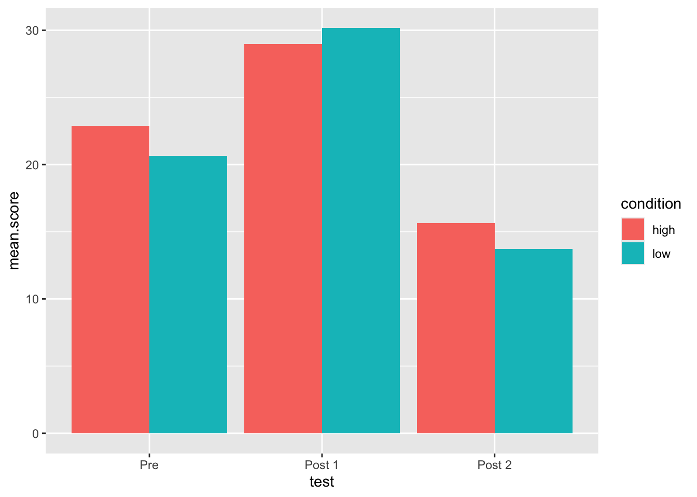

When working with long data, where participants have multiple
observations in multiple rows, you will find that a lot of data is
repeated. For instance, demographic features such as participant age and
sex or experimental conditions will stay the same for each
observation.
Sometimes you will want to add or manipulate data and join it with this repeated measures data. For example:
library(tidyverse)Long data
tibble(subject = c(rep('one',5), rep('two', 5)),
score = (c(1:5, 10:6)))## # A tibble: 10 × 2
## subject score
## <chr> <int>
## 1 one 1
## 2 one 2
## 3 one 3
## 4 one 4
## 5 one 5
## 6 two 10
## 7 two 9
## 8 two 8
## 9 two 7
## 10 two 6Another set of data you want to add
tibble(subject = c('one','two'), age = c(42, 79))## # A tibble: 2 × 2
## subject age
## <chr> <dbl>
## 1 one 42
## 2 two 79How can you form a single tibble which has both the score and ages in long format?
tibble(subject = c(rep('one',5), rep('two', 5)),
score = (c(1:5, 10:6)),
age = c(rep(42,5), rep(79,5)))## # A tibble: 10 × 3
## subject score age
## <chr> <int> <dbl>
## 1 one 1 42
## 2 one 2 42
## 3 one 3 42
## 4 one 4 42
## 5 one 5 42
## 6 two 10 79
## 7 two 9 79
## 8 two 8 79
## 9 two 7 79
## 10 two 6 79We could manually sort and join the two objects, but we would prefer a method more precise. This is where joins come in.
left_join()There are several ways to join but we will use
left_join(). This function joins the rows of two tibbles
into one object. The arguments for left_join() are:
x - the first tibbley - the second tibbleby - a column or column(s) shared by both tibbles, used
to match valuesleft_join() means that the object on the left
(x) is the final object to retain. All matches in
y that are also in x will be added. For
example:
one <- tibble(subject = c(rep(1,5), rep(2,5)), score = 1:10)
one## # A tibble: 10 × 2
## subject score
## <dbl> <int>
## 1 1 1
## 2 1 2
## 3 1 3
## 4 1 4
## 5 1 5
## 6 2 6
## 7 2 7
## 8 2 8
## 9 2 9
## 10 2 10two <- tibble(subject = c(1,2), age = c(38,40))
two## # A tibble: 2 × 2
## subject age
## <dbl> <dbl>
## 1 1 38
## 2 2 40We can use left join to add age to each row. Notice how it matches
each instance of age in y to any matches in x.
All rows in x are retained.
three <- left_join(one,two, by = 'subject')
three## # A tibble: 10 × 3
## subject score age
## <dbl> <int> <dbl>
## 1 1 1 38
## 2 1 2 38
## 3 1 3 38
## 4 1 4 38
## 5 1 5 38
## 6 2 6 40
## 7 2 7 40
## 8 2 8 40
## 9 2 9 40
## 10 2 10 40Even if we reverse the order of the data objects, we still sort of
get the results we want. This is because:
“If a row in x matches multiple rows in y, all the rows in y will be returned once for each matching row in x.”
Also, note what happens if you do not specify a by
argument
left_join(two,one)## Joining, by = "subject"## # A tibble: 10 × 3
## subject age score
## <dbl> <dbl> <int>
## 1 1 38 1
## 2 1 38 2
## 3 1 38 3
## 4 1 38 4
## 5 1 38 5
## 6 2 40 6
## 7 2 40 7
## 8 2 40 8
## 9 2 40 9
## 10 2 40 10exp.data which has the
following columns:subject - which is the numbers 1 through 10pre - 10 numbers randomly sampled from a normal
distribution with mean = 20, sd = 3post1 - 10 numbers randomly sampled from a normal
distribution with mean = 30, sd = 1post2 - 10 numbers randomly sampled from a normal
distribution with mean = 15, sd = 5set.seed of 500You should see this:
set.seed(500)
exp.data <- tibble(subject = 1:10, pre = rnorm(10, 20, 3),
post1 = rnorm(10, 30, 1),
post2 = rnorm(10, 15, 5))
exp.data## # A tibble: 10 × 4
## subject pre post1 post2
## <int> <dbl> <dbl> <dbl>
## 1 1 22.9 28.6 10.7
## 2 2 25.9 28.2 19.8
## 3 3 22.7 29.4 20.3
## 4 4 20.1 30.5 16.0
## 5 5 22.8 28.2 11.4
## 6 6 18.3 28.5 11.3
## 7 7 22.2 30.3 14.6
## 8 8 21.9 29.7 10.7
## 9 9 20.1 30.9 7.96
## 10 10 20.8 31.5 24.0exp.data.long from
exp.data using pivot_longer()score and
testYou should see this:
exp.data.long <- pivot_longer(exp.data, c(pre,post1,post2), values_to = 'score', names_to = 'test' )
exp.data.long## # A tibble: 30 × 3
## subject test score
## <int> <chr> <dbl>
## 1 1 pre 22.9
## 2 1 post1 28.6
## 3 1 post2 10.7
## 4 2 pre 25.9
## 5 2 post1 28.2
## 6 2 post2 19.8
## 7 3 pre 22.7
## 8 3 post1 29.4
## 9 3 post2 20.3
## 10 4 pre 20.1
## # … with 20 more rowsdemographic.data with
the following columnsYou should see this:
set.seed(100)
demographic.data <- tibble(subject = 1:10, age = rnorm(10, 20, .2), condition = c(rep('high',5), rep('low', 5)))
demographic.data## # A tibble: 10 × 3
## subject age condition
## <int> <dbl> <chr>
## 1 1 19.9 high
## 2 2 20.0 high
## 3 3 20.0 high
## 4 4 20.2 high
## 5 5 20.0 high
## 6 6 20.1 low
## 7 7 19.9 low
## 8 8 20.1 low
## 9 9 19.8 low
## 10 10 19.9 lowfull.data which is the
result of using left_join() on exp.data.long
and demographic.datafull.data <- left_join(exp.data.long, demographic.data)## Joining, by = "subject"full.data## # A tibble: 30 × 5
## subject test score age condition
## <int> <chr> <dbl> <dbl> <chr>
## 1 1 pre 22.9 19.9 high
## 2 1 post1 28.6 19.9 high
## 3 1 post2 10.7 19.9 high
## 4 2 pre 25.9 20.0 high
## 5 2 post1 28.2 20.0 high
## 6 2 post2 19.8 20.0 high
## 7 3 pre 22.7 20.0 high
## 8 3 post1 29.4 20.0 high
## 9 3 post2 20.3 20.0 high
## 10 4 pre 20.1 20.2 high
## # … with 20 more rowsoutput which contains the
mean and sd of score at each test time, separated by
conditionYou should see this:
output <- full.data %>%
group_by(test, condition) %>%
summarise(mean.score = mean(score), sd.score = sd(score))## `summarise()` has grouped output by 'test'. You can override using the `.groups`
## argument.output## # A tibble: 6 × 4
## # Groups: test [3]
## test condition mean.score sd.score
## <chr> <chr> <dbl> <dbl>
## 1 post1 high 29.0 0.971
## 2 post1 low 30.2 1.15
## 3 post2 high 15.6 4.51
## 4 post2 low 13.7 6.22
## 5 pre high 22.9 2.06
## 6 pre low 20.6 1.56ggplotggplot is a function to plot data and is usually what
you see when people show r plots. The function is more complicated than
other functions, but we can learn the basics for now.
ggplot needs to know the data it is using, as well as what to define the x and y axis with. This is done with the following syntax:
ggplot(data, aes(x = column1, y = column2))
Can you make a ggplot from output in which
mean.score is the y axis and test is the x
axis?
You will want to see something like this:
ggplot(output, aes(y = mean.score, x = test))
What’s wrong with our plot so far? The order of “test” is wonky. This is because R will auto-sort alphabetically.
use the summary() function on output$test -
what do you see?
Create a new value named test2 which is the result of
calling as.factor() on output$test. Then call
a summary() on test2, then call the function
levels() on test2 - what does this tell
us?
test2 <- as.factor(output$test)
summary(test2)## post1 post2 pre
## 2 2 2levels(test2)## [1] "post1" "post2" "pre"We can use relevel() to set a new baseline level for our
factor, but we might want more control than this.
levels(relevel(test2, ref = 'pre'))## [1] "pre" "post1" "post2"The factor() function allows us to define the
levels and the labels of our factor. The
levels argument should match what it already in the data,
and the labels can be used to give prettier text labels
(e.g., for plotting
factor(test2, levels = c('pre','post1', 'post2'))## [1] post1 post1 post2 post2 pre pre
## Levels: pre post1 post2factor(test2, levels = c('pre','post1', 'post2'), labels = c("Pre", "Post 1", "Post 2"))## [1] Post 1 Post 1 Post 2 Post 2 Pre Pre
## Levels: Pre Post 1 Post 2output$test to
be a factor, with levels and labels matching test2. You can
do this by assigning a value to itself:
output$test = factor()afterwards run summary() and levels() on
output$test. you should see this:
output$test <- factor(output$test, levels = c('pre', 'post1', 'post2'), labels = c('Pre', 'Post 1', 'Post 2'))
levels(output$test)## [1] "Pre" "Post 1" "Post 2"summary(output$test)## Pre Post 1 Post 2
## 2 2 2my.plot. call the plot by typing the name - this time
your x-axis should look bettermy.plot <- ggplot(output, aes(x = test, y = mean.score))
my.plot
We want to add actual points to the plot, to do so we add
geoms to the ggplot, which are different geometric objects.
These geoms can also take their own aes arguments, making
ggplot very powerful (but also confusing at times). Also, instead of a
pipe %>%, you use a + to link geoms. add a
geom_col() to the plot
my.plot +
geom_col()
Now add an aes function inside geom_col and
set fill to equal condition
my.plot +
geom_col(aes(fill = condition))
Now, let’s “dodge” the stacked columns so that they are side by side.
Add the argument position inside geom_col but
not inside aes and set it equal to 'dodge'
my.plot +
geom_col(aes(fill = condition), position = 'dodge')